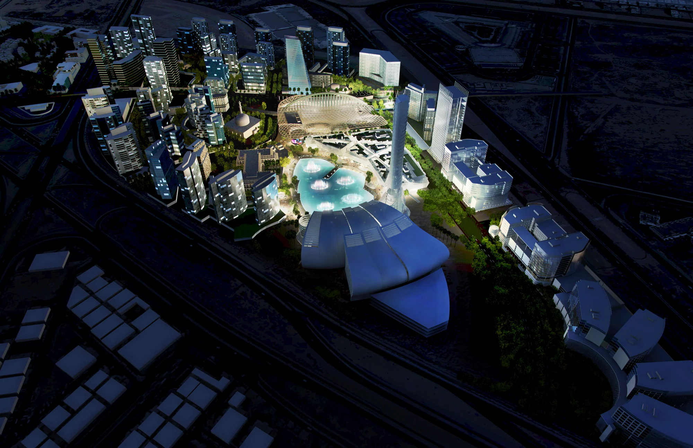
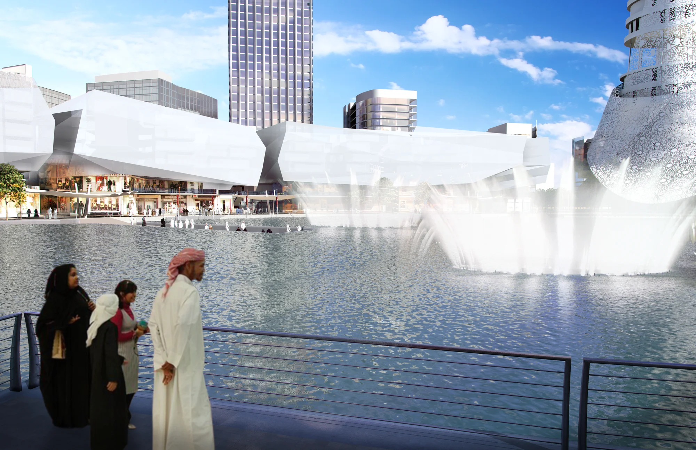
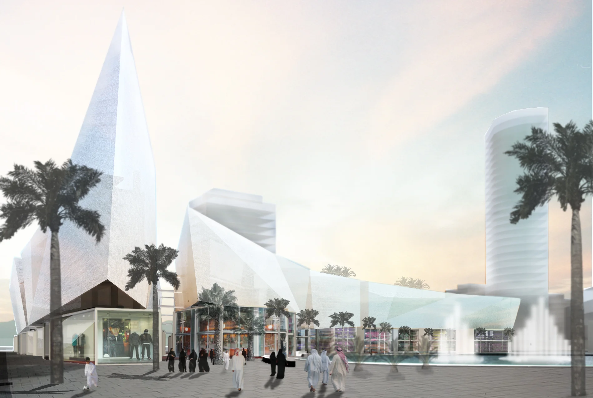
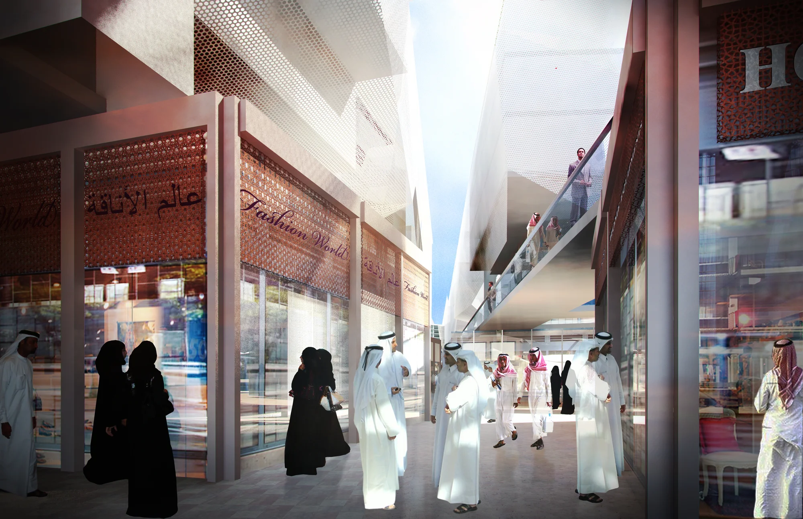
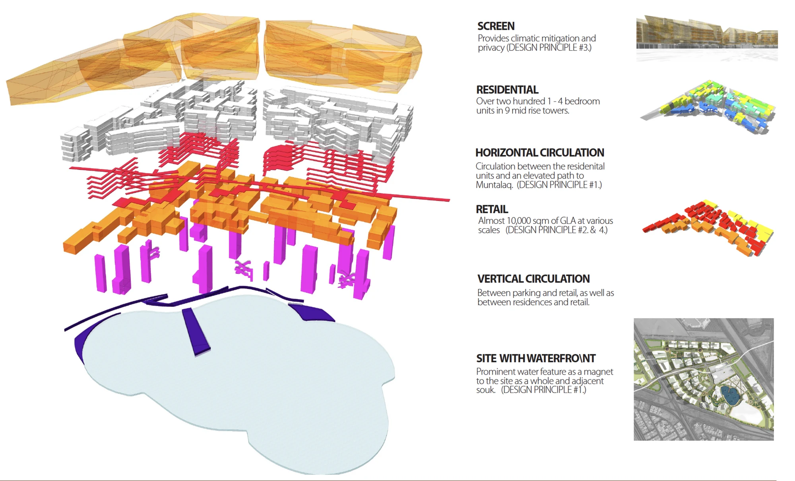
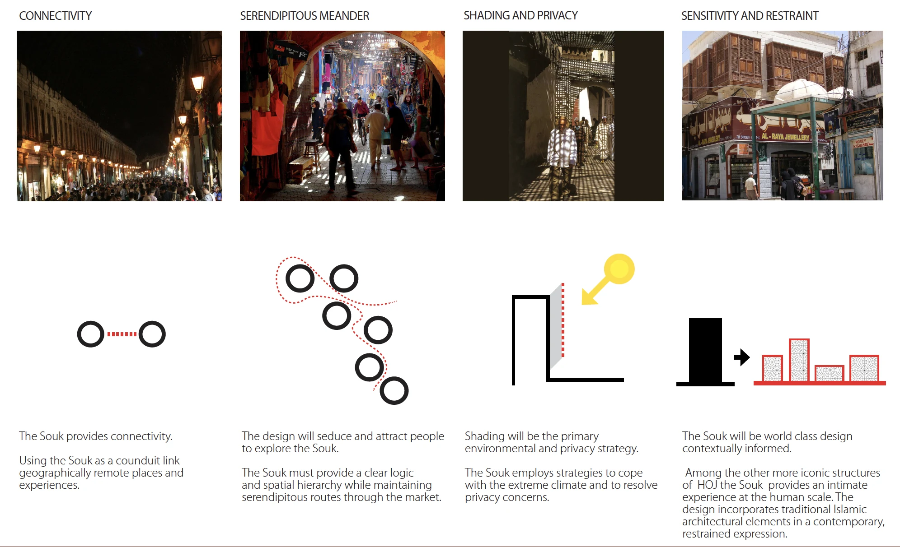

A mixed-use souk and residential community organized around a prominent waterfront water feature. Over two hundred one- to four-bedroom units are distributed across nine mid-rise residential towers, connected by an elevated path to the adjacent souk, which combines almost 10,000 square meters of retail at a range of scales beneath a faceted, climate-responsive screen.
The design was guided by four principles: connectivity, using the souk as a conduit linking geographically remote places and experiences; serendipitous meander, a clear spatial hierarchy that still rewards exploration; shading and privacy as the primary environmental strategy for an extreme climate; and sensitivity and restraint, incorporating traditional Islamic architectural elements in a contemporary, restrained expression.





